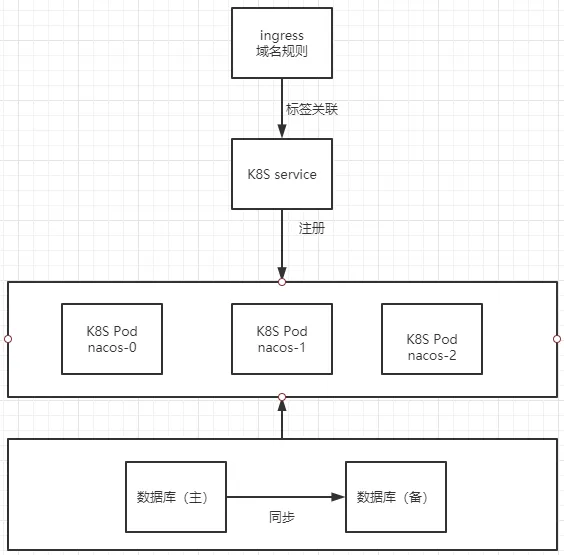

Linux: 注册配置中心-Nacos
- TAGS: Middleware
nacos_K8S高可用部署
本次部署采用外置数据库方式部署，集群副本数为3，使用官方文档搭建nacos集群及数据库不需要执行初始化sql语句，请参考官方文档 https://nacos.io/zh-cn/docs/quick-start.html
集群部署架构图

使用外置数据源
生产使用建议至少主备模式，或者采用高可用数据库。
初始化 MySQL 数据库
# 建库及用户 CREATE DATABASE nacos_devtest DEFAULT CHARACTER SET utf8mb4 COLLATE utf8mb4_general_ci; CREATE USER 'nacos'@'%' IDENTIFIED BY 'nacos'; GRANT ALL PRIVILEGES ON nacos_devtest.* TO 'nacos'@'%'; FLUSH PRIVILEGES; #建库导表 —— schema 必须用对应版本配套的，别拿旧版凑： NACOS_VERSION=2.3.2 curl -fL -o mysql-schema.sql \ https://ghfast.top/https://raw.githubusercontent.com/alibaba/nacos/${NACOS_VERSION}/distribution/conf/mysql-schema.sql mysql -h <MYSQL_HOST> -u nacos -p nacos_config < mysql-schema.sql
部署Nacos
kubectl apply -f nacos-cluster.yaml
kubectl -n nacos get pod -l app=nacos -w
改三处
- nacos-cm 的
mysql.host/mysql.db.name/mysql.user/mysql.password - Ingress 的
host - 如果改了 Namespace,
NACOS_SERVERS里的.nacos.svc.cluster.local要跟着改
nacos-cluster.yaml 文件模板
cat <<\EOF> nacos-cluster.yaml
---
apiVersion: v1
kind: ConfigMap
metadata:
name: nacos-cm
namespace: nacos
data:
mysql.host: "mysqll.xx.com"
mysql.db.name: "nacos"
mysql.port: "3306"
mysql.user: "nacos"
mysql.password: "NxxxN"
---
# 鉴权参数。官方 2.x 清单没有这段（默认 nacos.core.auth.enabled=false）。
# https://nacos.io/docs/next/manual/admin/auth/
# 生成方式：
# token.secret.key openssl rand -base64 48 # Base64 解码后 >= 32 字节，2.2.1 起无默认值
# server.identity.value openssl rand -hex 16 # 任意字符串，但别用 security 这类默认词
apiVersion: v1
kind: Secret
metadata:
name: nacos-auth
namespace: nacos
type: Opaque
stringData:
# nacos.core.auth.plugin.nacos.token.secret.key
token.secret.key: "ORXf/z0aHHlr7U8UYC1P92XQqQLWk9IzYuBlOQ/0MDP/ZZC7VNMLmWcOAmqk4qG6"
# nacos.core.auth.server.identity.value
server.identity.value: "1f80078cb3547f6f14b4ca3dd44cb424"
---
apiVersion: v1
kind: Service
metadata:
name: nacos-headless
namespace: nacos
labels:
app: nacos-headless
spec:
type: ClusterIP
clusterIP: None
ports:
- port: 8848
name: server
targetPort: 8848
- port: 9848
name: client-rpc
targetPort: 9848
- port: 9849
name: raft-rpc
targetPort: 9849
## compat: 1.4.x raft election port
- port: 7848
name: old-raft-rpc
targetPort: 7848
selector:
app: nacos
---
apiVersion: apps/v1
kind: StatefulSet
metadata:
name: nacos
namespace: nacos
spec:
serviceName: nacos-headless
replicas: 3
selector:
matchLabels:
app: nacos
template:
metadata:
labels:
app: nacos
spec:
imagePullSecrets:
- name: harbor-pull
affinity:
podAntiAffinity:
requiredDuringSchedulingIgnoredDuringExecution:
- labelSelector:
matchExpressions:
- key: "app"
operator: In
values:
- nacos
topologyKey: "kubernetes.io/hostname"
containers:
- name: nacos
imagePullPolicy: IfNotPresent
#image: nacos/nacos-server:v3.2.4
image: 10.50.22.47/infra/nacos/nacos-server:v2.3.2
resources:
requests:
memory: "1Gi"
cpu: "250m"
limits:
memory: "1Gi"
ports:
- containerPort: 8848
name: client
- containerPort: 9848
name: client-rpc
- containerPort: 9849
name: raft-rpc
- containerPort: 7848
name: old-raft-rpc
env:
- name: NACOS_REPLICAS
value: "3"
- name: MYSQL_SERVICE_HOST
valueFrom:
configMapKeyRef:
name: nacos-cm
key: mysql.host
- name: MYSQL_SERVICE_DB_NAME
valueFrom:
configMapKeyRef:
name: nacos-cm
key: mysql.db.name
- name: MYSQL_SERVICE_PORT
valueFrom:
configMapKeyRef:
name: nacos-cm
key: mysql.port
- name: MYSQL_SERVICE_USER
valueFrom:
configMapKeyRef:
name: nacos-cm
key: mysql.user
- name: MYSQL_SERVICE_PASSWORD
valueFrom:
configMapKeyRef:
name: nacos-cm
key: mysql.password
- name: SPRING_DATASOURCE_PLATFORM
value: "mysql"
- name: MODE
value: "cluster"
- name: NACOS_SERVER_PORT
value: "8848"
- name: PREFER_HOST_MODE
value: "hostname"
- name: NACOS_SERVERS
value: "nacos-0.nacos-headless.nacos.svc.cluster.local:8848 nacos-1.nacos-headless.nacos.svc.cluster.local:8848 nacos-2.nacos-headless.nacos.svc.cluster.local:8848"
- name: JVM_XMS
value: "512m"
- name: JVM_XMX
value: "512m"
- name: JVM_XMN
value: "256m"
- name: MYSQL_SERVICE_DB_PARAM
value: "characterEncoding=utf8&connectTimeout=10000&socketTimeout=30000&autoReconnect=true&useSSL=false&allowPublicKeyRetrieval=true&serverTimezone=Asia/Shanghai"
# 鉴权。2.3.2 默认关闭，开了之后所有 OpenAPI 都要带 accessToken。
- name: NACOS_AUTH_ENABLE
value: "true"
- name: NACOS_AUTH_TOKEN
valueFrom:
secretKeyRef:
name: nacos-auth
key: token.secret.key
- name: NACOS_AUTH_IDENTITY_KEY
value: "serverIdentity"
- name: NACOS_AUTH_IDENTITY_VALUE
valueFrom:
secretKeyRef:
name: nacos-auth
key: server.identity.value
# 登录态有效期，默认 18000（5 小时）
- name: NACOS_AUTH_TOKEN_EXPIRE_SECONDS
value: "18000"
# 鉴权结果缓存，默认 false。开了能省掉每次请求查库，
# 代价是改权限后最多 15s 才生效。
- name: NACOS_AUTH_CACHE_ENABLE
value: "true"
# User-Agent 白名单：带 Nacos-Server UA 就免鉴权的老兼容开关。
# 2.2.0 起默认 false，这里显式写死，防止镜像换版本后被打开。
- name: NACOS_AUTH_USER_AGENT_AUTH_WHITE_ENABLE
value: "false"
startupProbe:
httpGet:
path: /nacos/v1/console/health/readiness
port: 8848
initialDelaySeconds: 60
periodSeconds: 5
failureThreshold: 60
livenessProbe:
httpGet:
path: /nacos/v1/console/health/liveness
port: 8848
periodSeconds: 20
timeoutSeconds: 10
failureThreshold: 6
readinessProbe:
httpGet:
path: /nacos/v1/console/health/readiness
port: 8848
periodSeconds: 10
timeoutSeconds: 10
---
# 集群内业务访问入口
apiVersion: v1
kind: Service
metadata:
name: nacos
namespace: nacos
labels:
app: nacos
spec:
type: ClusterIP
selector:
app: nacos
ports:
- name: server
port: 8848
targetPort: 8848
- name: client-rpc
port: 9848
targetPort: 9848
EOF
配置ingress规则，域名根据实际情况配置
apiVersion: networking.k8s.io/v1
kind: Ingress
metadata:
name: bigdata-nacos
namespace: english-prod
spec:
ingressClassName: nginx-prod
rules:
- host: kubenacos.cici.com
http:
paths:
- backend:
service:
name: bigdata-nacos
port:
number: 8848
path: /
pathType: ImplementationSpecific
tls:
- hosts:
- kubenacos.cici.com
secretName: cici-com-tls
登入web界面，URL域名/nacos
- 默认账号：nacos 默认密码：nacos
验证
数据连接验证
kubectl --kubeconfig /root/.kube/config-java -n nacos run netcheck --rm -it --restart=Never \ --image=nacos/nacos-server:v2.3.2 \ --overrides='{"spec":{"imagePullSecrets":[{"name":"harbor-pull"}]}}' \ --command -- bash -c ' H=xxx.rds.aliyuncs.com getent hosts $H timeout 5 bash -c "</dev/tcp/$H/3306" && echo TCP_OK || echo TCP_FAIL curl -s --max-time 10 https://ifconfig.me; echo '
鉴权已开启， /v1/core/cluster/nodes 、 /v1/ns/operator/servers 都带 @Secured ，官方原文的命令要先换 token：
# 先登录拿 accessToken，默认 5 小时过期 TOKEN=$(kubectl -n nacos exec nacos-0 -- curl -s -X POST \ 'http://localhost:8848/nacos/v1/auth/login' \ --data-urlencode 'username=nacos' \ --data-urlencode 'password=Yxxxy' \ | python3 -c 'import sys,json;print(json.load(sys.stdin)["accessToken"])') # 集群成员列表 + 每个节点状态 # 重点看每个节点的 state，三个都该是 UP。 kubectl -n nacos exec nacos-0 -- curl -s \ "http://localhost:8848/nacos/v2/core/cluster/node/list?accessToken=$TOKEN" | python3 -m json.tool # 命名服务指标：serviceCount / instanceCount / responsibleServiceCount kubectl -n nacos exec nacos-0 -- curl -s \ "http://localhost:8848/nacos/v1/ns/operator/metrics?accessToken=$TOKEN" | python3 -m json.tool # 三个 Pod 分别探活，确认不是只有 nacos-0 正常 for i in 0 1 2; do echo -n "nacos-$i: " kubectl -n nacos exec nacos-$i -- curl -s http://localhost:8848/nacos/v1/console/health/readiness echo done # cluster.conf 是否三个节点都在（读文件，不走鉴权） for i in 0 1 2; do echo "--- nacos-$i ---"; kubectl -n nacos exec nacos-$i -- cat conf/cluster.conf; done
服务注册验证
# 服务注册 kubectl -n nacos exec nacos-0 -- curl -s \ -X POST "http://localhost:8848/nacos/v1/ns/instance?serviceName=nacos.naming.serviceName&ip=20.18.7.10&port=8080&accessToken=$TOKEN" # 服务发现 curl -X GET "http://<cluster-ip>:8848/nacos/v1/ns/instance/list?serviceName=nacos.naming.serviceName&accessToken=$TOKEN" # 发布配置 curl -X POST "http://<cluster-ip>:8848/nacos/v1/cs/configs?dataId=nacos.cfg.dataId&group=test&content=helloWorld&accessToken=$TOKEN" # 获取配置 curl -X GET "http://<cluster-ip>:8848/nacos/v1/cs/configs?dataId=nacos.cfg.dataId&group=test&accessToken=$TOKEN"
客户端接入
spring:
cloud:
nacos:
server-addr: nacos.nacos.svc.cluster.local:8848
username: nacos
password: nacos # 建议在控制台建业务账号并授权到具体 namespace，别用 nacos
discovery:
server-addr: ${spring.cloud.nacos.server-addr}
username: ${spring.cloud.nacos.username}
password: ${spring.cloud.nacos.password}
config:
server-addr: ${spring.cloud.nacos.server-addr}
username: ${spring.cloud.nacos.username}
password: ${spring.cloud.nacos.password}
username/password 在 spring.cloud.nacos 这一层不会自动下发给 discovery 和 config,
取决于 spring-cloud-alibaba 版本,所以上面两段显式写了一遍。
Nacos 2.x 客户端会自己用 端口+1000 去连 gRPC(9848)。集群内走 Service 没问题;
如果要用 NodePort 暴露给集群外,两个 nodePort 必须保持 1000 的差值
(比如 30848 / 31848),否则控制台能开但客户端注册超时。
鉴权
2.3.2 默认 nacos.core.auth.enabled=false ,所以官方 2.x 清单里没有鉴权环境变量,不配也能起。要开启鉴权,再往 env 里加(2.2.1 起 token.secret.key 没有默认值,必须自己给):
- name: NACOS_AUTH_ENABLE value: "true" - name: NACOS_AUTH_TOKEN # openssl rand -base64 32 value: "<Base64,解码后 >= 32 字节>" - name: NACOS_AUTH_IDENTITY_KEY value: "serverIdentity" - name: NACOS_AUTH_IDENTITY_VALUE value: "<自定义>"